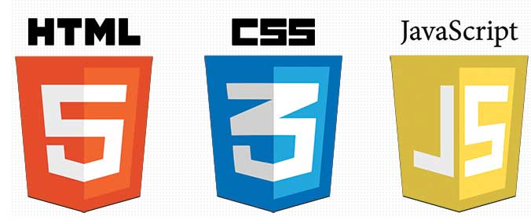
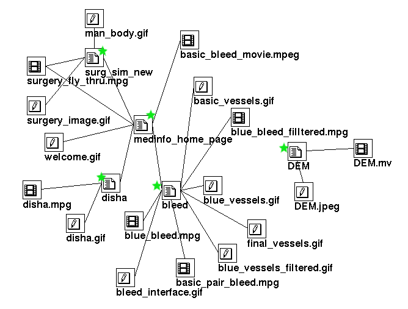

Html5 + Epub3

(..les noter, velkommen, mine meninger er mine meninger,etc)
Agenda
- Bio
- Internett og www
- html5
- Seksjoner og outline
- Verktøy!
- www uten http (epub)
- Semantic og inflection
@dynnamitt
Kjetil Flovild-(Dynna)Midtlie
Jobber hos Docstream A/S som Seniorutvikler/Arkitekt. Holder til på Olavsgaard, Skjetten. (noter; om Docstream litt ..)
Har jobbet med IKT i flere bransjer/selskaper i over 18 år.
80-tallet; Selvlært på BASIC, deretter C.
Teknisk Fagskole Gjøvik, oppdaget internett og HTML der ca. 1993/94.
Byttet ut SQL med XML ca. periode 2002 - 2004.
Byttet ut MS Windows med Linux ca. 2004.
Laget min siste Windows desktop app i Des. 2005.
(HTML/JS frontends siste ~ 9 år.)
Om dagen mye Linux Cloud/Drift (aka DevOps)
Koder Posix/Shell/CoffeeScript/Nodejs/Java
.. i tillegg til Markup/down
"Internett har kommet for å bli"

..og i sær WWW !
(enormt mange standarder (i w3c), utfordende å begrense seg, jeg starter m HTML; v4 > v5 , "seksjoner og outline"
www er hypermedia
- HTML docs + HTTP kommunikasjon
- Deling av data via hyperlinks !
- Flytene tekst, linjer er ALDRI fast bredde !
- Uendelig antall klientet/agenter !
Noter:
- HTML fila er kjernen som gir oversikt
- Tekst formatet er sterkest av dem alle! (UNIX 1970)
- ..men innimellom kan bilder hjelpe oss.
- Ergo; "sier IKKE mer enn tusen ord"
HTML5
- 10 år siden WHATWG (ikke w3c) sparket igang igjen
- XHTML1 gikk skeis for w3c, "den siste XML moikaner?"
- XML lever videre såvidt, men markdown vinner terreng.
- 2 forskjellige utgaver ; XHTML og HTML
- HTML5 har blitt STØRRE men også ENKLERE !
- "As simple as possible, as complex as necessary"
Enkelere
<!doctype html>
thats it folks!
LIVEDEMOs
Semantik? Outline?
The simple way; h1,h2,h3,h4,h5,h6
The flexible way; section(s)
Pros & Cons -> LIVEDEMOs
Verktøyene (for WinDOS)
Word
En god BROWSER !